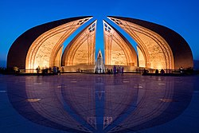

The Pakistan Monument (Urdu: یادگارِ پاکستان) is a national monument and heritage museum located on the western Shakarparian Hills in Islamabad, Pakistan. The monument was constructed to symbolize the unity of the Pakistani people. It is dedicated to the people of Pakistan who sacrificed their "today" for a better "tomorrow". The four large petals represent each of the four main cultures of Pakistan, the Punjabi, the Baloch, the Sindhi and the Pakhtun. The three smaller petals represent: the minorities, Azad Kashmir and Gilgit-Baltistan. Its elevation makes the monument visible from across the Islamabad-Rawalpindi metropolitan area and is a popular tourist destination.[1]
The plan for a National Monument was first envisioned in 2002 by the government of Pakistan then assisted by Uxi Mufti, son of Mumtaz Mufti. The Ministry of Culture was tasked to organize through Pakistan Council of Architects and Town Planners; a national monument design competition based on the theme of signifying strength, unity and dedication of the people of Pakistan into an icon representing an independent and free nation.[2] From a total of 21 submissions, 3 were short-listed. The final design proposed by Arif Masoud was selected and approved on 10 July 2003.[3] The foundation stone was laid on 25 May 2004, completed in 2006 and inaugurated on 23 March 2007 by President General Pervez
Covering a total area of 2.8 hectares (6.9 acres), the design of the monument is rooted in the rich Mughal architecture of the Subcontinent. Its petal-shaped structure is derived from the traditional muqarnas of Mughal architecture. As the architect says: "We should learn from history but not remain in it." He used today's technology to modernize the historical form of the muqarnas. The resultant petal-shaped structure emphasizes the importance of unity and togetherness of the people of Pakistan. Rather than symbolizing the four provinces (as is mistakenly observed), it represents the four different cultures of the people of Pakistan. The four large petals represent each of the four cultures, the Punjabi, the Baloch, the Sindhi and the Pakhtun. The three smaller petals represent: the minorities, Azad Kashmir and Gilgit-Baltistan. All seven petals, though independent of each other, stand together in unison to form the nation of Pakistan. Standing together, they are protecting the star and the crescent of the flag of Pakistan. The star of the flag in the monument is designed in shiny black granite with golden stars, which represent the people who sacrificed their life for Pakistan. The moon crescent is made from stainless steel with inspirational writings of Quaid-e-Azam Muhammad Ali Jinnah and Allama Iqbal. The petals are built of granite (projecting in a suspended cantilever form, among the largest in Asia) and its inner walls are covered with artwork depicting various landmarks of the Pakistan, notable people of Pakistan's independence movement and musical and dance themes.[6] The landmarks portrayed include Lahore Fort, Badshahi Mosque, Khyber Pass, and Minar-e-Pakistan.